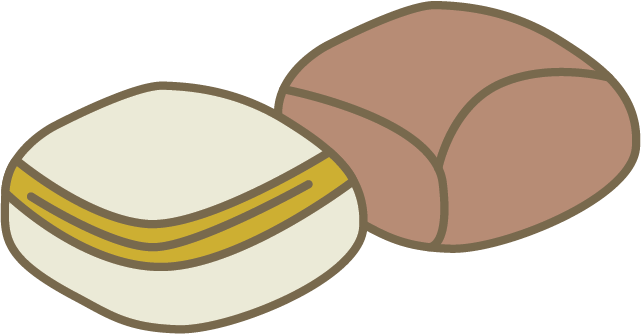

饅頭 STEAMED BUNS
These are buns that are often steamed and served as is. It is similar to bread, but much softer and fluffier due to the steaming process. These have a mild sweet taste, and there are brown variants of the white bun which adds malt and brown sugar. Some breakfast places eat it with fillings such as eggs and you tiao. But I have to say the best way to eat it is just as is.